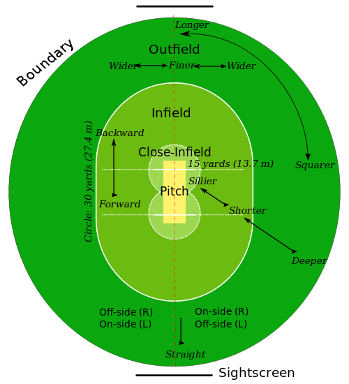
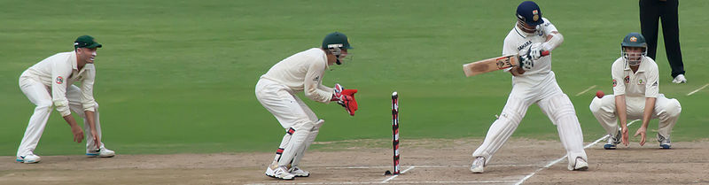

What is Cricket ?
Cricket is a bat and ball games , played between 2 teams . Each team consists of 12 players.The games is played in different formats some of which are below
- Test Cricket ( the orginal format 5 days long)
- One day international ( shorter vesion of game )
- T20 (super short vesions of game )
History of Cricket
Cricket can definitely be traced back to Tudor times in early 16th-century England though there have been a number of claims, many of them spurious and/or lacking evidence, supporting earlier dates from 1301. The earliest definite reference to cricket being played comes from evidence given at a 1598 court case which mentions that "creckett" (sic) was played on common land in Guildford around 1550.
Rules of the Game
A cricket match is divided into periods called innings (which ends with "s" in both singular and plural form). It is decided before the match whether the teams will have one innings or two innings each. During an innings one team fields and the other bats. The two teams switch between fielding and batting after each innings. All eleven members of the fielding team take the field, but only two members of the batting team (two batsmen) are on the field at any given time. The order of batsmen is usually announced just before the match, but it can be varied. A coin toss is held by the team captains (who are also players) just before the match starts: the winner decides whether to bat or field first. The cricket field is usually circular or oval in shape, with a rectangular pitch at the centre. The edge of the playing field is marked with a boundary, which could be a fence, part of the stands, a rope or a painted line. At each end of the pitch is a wooden target called a wicket; the two wickets are placed 22 yards (20 m) apart. The pitch is marked with painted lines: a bowling crease in line with the wicket, and a batting or popping crease four feet (122 cm) in front of it. The wicket is made of three vertical stumps supporting two small horizontal bails. A wicket is put down if at least one bail is dislodged, or one stump is knocked down (usually by the ball, but also if the batsman does it with his body, clothing or equipment). This is also described as breaking, knocking down, or hitting the wicket – though if the ball hits the wicket but does not dislodge a bail or stump then it is not considered to be down.
Cricket Playing Countries
Some cricket countries all played cricket in all formats
- INDIA
- ENGLAND
- AUSTRALIA
- WEST INDIES
- PAKISTAN
- NEW ZEALAND
- Lot more ...
World Cup
My Cricket Career
I had a great passion for cricket supported my father Dr Pedddakota Sanjeeva Rao.I played for my school KV Picket in the sub regionals during my high school and in bachlors played for the university JNTU in the south zone inter university touney. I also played in hyderbad cricket association leagues in the C division ,A Division one and A Division 2 day matches . I played as open bat and used to bowel half spin.